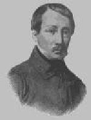

Lez-Breizh
Texte recueilli par Théodore Hersart de la Villemarqué:
Traduction française d' Auguste Briseux (1803 - 1858)
Tirée des "Histoires Poétiques"Mélodie
(Variante de la mélodie du "Barzhaz Breizh"
Arrangement par Christian Souchon (c) 2005
|
MARC'HEG AR ROUE I II 71.Etre Lorgnez ha marc'heg Lez-Breizh A zo bet tonket un emgann reizh 72.Doue da ray gounid d'ar Breizhad Ha d'ar re zo er gêr keloù mat ! 73.An aotrou Lez-Breizh a lavare D'e floc'hig yaounak, un deiz a oe : 74."Dihun, va floc'h, ha sav alese Ha kae da spuran din va c'hleze 75.Va zok-houarn, va goaf ha va skoed D'o ruziañ e gwad ar C'hallaoued 76.Gant skoazell Breizh ha ma divrec'h Me ho savo c'hoazh hiziv d'an nec'h ! 77.- Va aotrou mat, din-me leveret : Ha d'an emgann d'hoc'h heul na in ket ? 78.- Ha petra lavarfe da vamm ger Ma na zistrofez ket mui d'ar gêr ? 79.Pa redfe da wad war an douar Piv lakefe termen d'he glac'har ? 80.- An' Doue ! aotrou, ma em c'haret D'an emgann c'hwi va losko monet 81.N'am eus ket aon rak ar C'hallaoued Kriz eo va c'halon, va dir lemmet 82.Bezañ drouk gant an neb a garo E-lec'h ma eot me a yelo 83.E-lec'h ma eot me a yelo 'Lec'h ma vrezelot, me 'vrezelo" II 84.Monet eure Lez-Breizh d'an emgann Nemet e floc'h yaouank gantañ 85.Santez Anna 'r vor pa erruas Tre 'barzh he iliz eñ a yeas 86."Itron Santez Anna benniget Yaouankik e teuis d'ho kwelet 87.Ne oan ket ugent vloaz achuet Hag e ugent stourmad e oan bet 88.Hag o holl hon eus o gounezet Dre ho kennerzh, itron benniget 89.Mard an me c'hoazh war va c'hiz d'ar vro Mamm Santez Anna, me ho kopro 90.Me a royo deoc'h ur gouriz koar A ray teir zro en-dro d'ho moger 91.Ha teir d'hoc'h iliz, teir d'ho pered Ha teir d'ho touar, pa vin degoue'et 92.Hag ur banniel voulouz-satin-gwenn Un troad olifant flour d'he dougen 93.Hag seizh kloc'h arc'hant a roin ouzhpenn A gano ge, noz-deiz, war ho penn 94.Ha teir gwech ez in war va daoulin Da gerc'hat dour evit ho pinsin 95.- Kae d'an emgann, kae, marc'heg Lez-Breizh Mont a ran-me ganeout-te ivez" III 96."Klevet-hu 'mañ Lez-Breizh o tonet Gantañ ur strollad, hag eñ fardet ! 97.Ha ! dindanañ ur azenig gwenn Ur c'habestrig kanab en e benn 98.Hag ur floc'h bihan en e gichen Hag eñ, hervez e vrud, ur gwall zen" 99.Floc'h bihan Lez-Breizh dal m'o gwelas Tostoc'h-tost d'e vestr en em riblas 100."Sellet-hu ! Lorgnez o tont en hent ! Ur stroll marc'heien 'n e ziagent 101.Ur stroll marc'heien a-dreñv e gein Dek zo, ha dek all, ha dek ouzhpenn ! 102.'Maint o tizhout gant ar c'hoad kistin Bec'h a vo, mestr paour, en em zifenn ! 103.- Gwelet pet zo anezho rit-te Pa o devo tañvaet va dir-me 104.Stok da gleze, floc'h, ouzh va c'hleze Ha deomp-ni a-raok en o bete" IV 105."Ha ! demad dit-te, marc'heg Lez-Breizh - Ha ! demad dit-te, marc'heg Lorgnez 106.- Ha deut out da-unan d'an emgann ? - N'on ket deut d'an emgann ma-unan 107.D'an emgann ma-unan ned an ket Santez Anna zo ganin kevred 108.- Dont a ran-me a-berzh va roue Da lemel diganit da vuhez 109.- Kae war da c'hiz ! lavar d'az roue Me ra fae outañ, 'vel a'nout-te 110.Me ra fae outañ, 'vel a'nout-te 'Vel deus da gleze, 'vel deus da re 111.Kae da Baris, e-mesk ar merc'hed Da zougen da zilhad alaouret 112.'Hend-all, e lakain da wad ken yen Ha ma'z eo an houarn pe ar mein 113.- Marc'heg Lez-Breizh, din-me leveret, E pe gwad emaoc'h-hu bet ganet ? 114.Disterañ mevel zo em bandenn A lemfe ho tok diwar ho penn" 115.Lez-Breizh, 'dal m'hen deveus e glevet E gleze bras en deus diwennet 116."Ma ne t'eus ket anave'et an tad Me ray dit anaout ar mab anat !" V 117.Lean kozh ar c'hoad war dreuz e gell Da floc'h Lez-Breizh a lavare hael 118."Tizh zo warnoc'h o redek er c'hoad ! Saotret hoc'h harnez gant poult ha gwad 119.Deuet, mabig, tre em minic'hi Deuet da ziskuizh ha da walc'hiñ 120.- N'eo ket dare diskuizh ha gwalc'hiñ Nemet kaout ur feunteun, hep si 121.Kaout dour dre-mañ d'am mestr yaouank Hag eñ kouezet en emgann skuizh-stank 122.Trizek soudard lazhet dindanañ Marc'heg Lorgnez lazhet da gentañ ! 123.Ha n'em eus diskaret kement-all Lammout kuit o deus graet ar re all" VI 124.Breizhat en e galon na vije Neb a-walc'h e galon na c'hoarzhe 124b.O welet ar yeot glas ruziet Gant gwad ar C'hallaoued milliget 125.An aotrou Lez-Breizh, en e goazez, O tiskuizhañ, outo a selle 126.Kristen en e galon na vije E Santez Anna, neb na ouelje 127.O welet an iliz o leizhañ Gant daoulagad Lez-Breizh o ouelañ 128.War e zaoulin, o ouelañ Lez-Breizh, O trugarekaat gwir-warez Vreizh 129."Trugarekaat ! mamm Santez Anna ! C'hwi hoc'h eus gounezet an taol-mañ !" VII 130.Da zerc'hel koun mat eus an emgann Eo bet savet ar barzhoneg-mañ 131.Ra vezo kanet gant tud a Vreizh En enor d'an aotrou mat Lez-Breizh ! 132.Ra vezo kanet pell tro-war-dro Da lakaat laouen holl dud ar vro !" |
LE CHEVALIER DU ROI I Bonheur de revivre, aux temps primitifs, D'écouter leurs chants joyeux ou plaintifs, Les chants glorieux que le peuple encor Conserve en son coeur, fidèle trésor! J'en veux traduire un... Guerriers d'autrefois, De vos tertres verts, sortez à ma voix. II Entre deux seigneurs, un Frank, un Breton, S'apprête un combat, combat de renom. Du pays breton Lez-Breizh est l'appui, Que Dieu le soutienne et marche avec lui! - Le seigneur Lez-Breizh, le bon chevalier, Eveille un matin son jeune écuyer: - Page, éveille-toi, car le ciel est clair; Page, apprête-moi mon casque de fer. - Ma lance d'acier, il faut la fourbir, Dans le corps des Franks je veux la rougir. - Maître, vous avez mon coeur et ma foi. A cette rencontre irez-vous sans moi? - Que dirait ta mère, enfant sans raison, Si je revenais seul vers sa maison? Si ton corps restait au milieu des morts, Ta mère viendrait mourir sur ton corps. - Maître, au nom du Ciel, maître, parlez bas, Et marchons tous deux à vos grands combats. Moi, des guerriers franks, je n'ai nulle peur: Dur est mon acier et dur est mon coeur. Maître où vous irez, avec vous j'irai. Où vous combattrez, moi je combattrai. - III Le seigneur Lez-Breizh, des Bretons l'appui, Allait au combat, son page avec lui. Passant à l'Armor, tout près du saint lieu, Il voulut entrer et prier un peu: - Quand je vins chez vous, sainte Anne d'Armor, La première fois, j'étais jeune encor. Avais-je vingt ans? Je ne le crois pas. Pourtant j'avais vu plus de vingt combats, Combats où mon bras fit bien son devoir, Mais gagnés surtout par votre pouvoir. Si dans mon pays sans mal je reviens, Mère, vous aurez part dans tous mes biens. Un cordon de cire épais de trois doigts Autour de vos murs tournera trois fois. Dame, vous aurez, pour prix de mes jours, Robe de brocart, manteau de velours. Vous aurez aussi bannière en satin Avec un support d'ivoire et d'étain. Sept cloches d'argent sur votre beau front, Le jour et la nuit gaîment sonneront. Puis j'irai trois fois remplir à genoux Votre bénitier: Mère, entendez-vous? - Chevalier Lez-Breizh, va combattre, va! Ton rival est fort, mais je serai là. - IV - J'aperçois Lez-Breizh, suivi de ses gens, Bataillon nombreux, armé jusqu'aux dents. Bon! un âne blanc est son destrier Beau licol de chanvre et même étrier. Il a pour escorte un page, un enfant: Mais ce nain, dit-on, vaut presque un géant. - J'aperçois Lorgnèz suivi de ses gens, Bataillon nombreux, armé jusqu'aux dents. J'aperçois Lorgnèz, tout cuirassé d'or. Ils sont dix et dix, dix autres encor. - Maître, les voilà près du châtaignier. Contre eux nous aurons grand peine à gagner. - Quand j'aurai sur eux étendu mon bras, Alors sur le pré tu les compteras. Que ton bouclier sur mon bouclier Sonne! pus marchons, mon jeune écuyer. - V - Hé! bonjour à toi, chevalier Lez-Breizh! - Hé! bonjour à toi, chevalier Lorgnez! - Par l'ordre du roi, mon prince et seigneur, Je viens t'arracher la vie et l'honneur. - Chevalier Lorgnèz, retourne à ton roi: De lui j'ai souci tout comme de toi. Retourne à Paris, il est temps encor, Montrer dans les bals, ta cuirasse d'or. Sinon, chevalier, je rendrai ton sang Froid comme la pierre ou l'eau de l'étang. - Chevalier Lez-Breizh, au fond de quel bois As-tu vu le jour, chevalier courtois? Mon dernier valet, hobereau si fier Fera bien sauter ton casque de fer. - A ces mots, Lez-Breizh tira vers le ciel Son glaive d'acier, comme saint Michel. - Le nom de mon père, on ne le sait pas? Eh bien, moi, son fils, tu me connaîtras! - VI - Page, où courez-vous à travers le champ? Vos bras sont couverts de fange et de sang. Dans mon ermitage il vous faut laver. - Je cherche une source, où donc la trouver? Je cherche de l'eau pour mon doux seigneur Brisé de fatigue et tout en sueur. Treize combattants tombés sous ses coups! L'insolent Lorgnèz le premier de tous. Treize autres guerriers sont tombés sous moi, Et le reste a fui tout pâle d'effroi. - VII Il n'eût pas été Breton dans son coeur Qui n'aurait point rit d'un rire vainqueur, A voir les gazons en mai reverdis Tout rouges du sang de ces Franks maudits. Lez-Breizh sur leurs corps s'en vient s'accouder Et se délassait à les regarder. Il n'eût pas été chrétien dans son coeur Qui n'eût, ce soir-là, pleuré de bonheur, En voyant Lez-Breizh seul agenouillé, Devant lui l'autel de larmes mouillé, En voyant Lez-Breizh sur ses deux genoux, Lui guerrier si fier et chrétien si doux: -O mère sainte Anne, o reine d'Armor, Pour moi dans ce jour vous étiez encor! Voyez à vos pieds votre serviteur: A vous la victoire, à vous tout l'honneur! - VIII Pour le souvenir d'un combat si grand, Un barde guerrier a rimé ce chant: Que dans l'avenir il soit répété! Que ton nom, Lez-Breizh, partout soit chanté! Allez-donc, mes vers, dans tous les cantons Et semez la joie aux coeurs des Bretons! |

Pour en savoir plus sur Briseux, cliquer ici: ICI -HERE
(Click this link to know more about Briseux).
Retour à "Leiz-Breizh"
Taolenn